Usar y mejorar tu historial de Git
Maëlle Salmon
Git es un Sistema de Control de Versión (VCS).
Git se [parece] más a un sistema de archivos miniatura con algunas herramientas tremendamente poderosas desarrolladas sobre él, que a un VCS [(sistema de control de versión)].
Después de confirmar [un commit] en Git es muy difícil perderla, especialmente si envías [esos cambios] a otro repositorio con regularidad.
📜 Historial que usar
🌳 Ramas
Pequeños commits (modificaciones) con mensajes informativos.
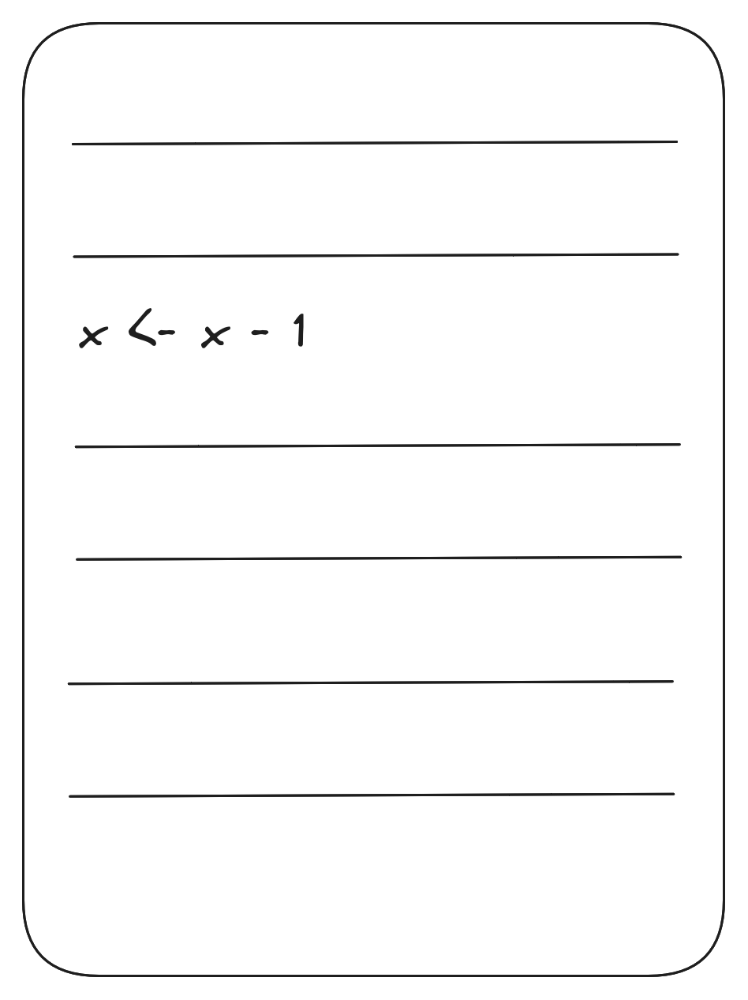
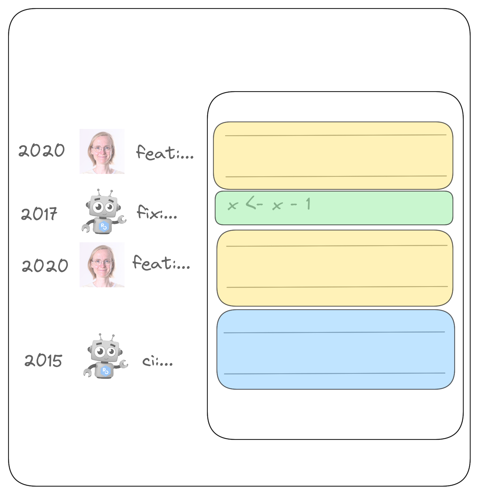
“Añadir un montón de archivos antes del almuerzo 🍝”
Muestra 145 ficheros modificados con 2.624 addiciones y 2.209 supresiones.
“fix: adaptar el código al índice 0 de la herramienta”
Visualización de 2 ficheros modificados con 3 addiciones y 2 supresiones.
¡Oh no, esa idea de hace 7 commits está mal! Deberíamos…
Borrar la modificación manualmente ;
Revertir (“Revert”) el commit que añadió la modificación?
Esto sólo funciona bien si el commit es pequeño.
Recordatorio de nuestra primera sesión de Git. 😉
10 minutos
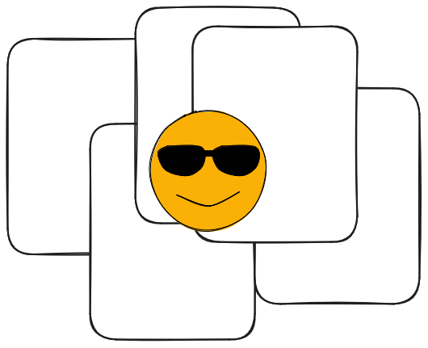
.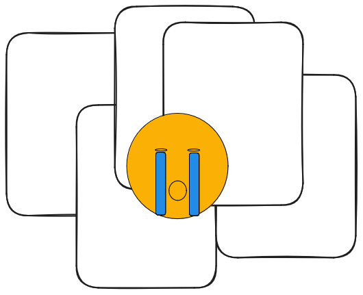
.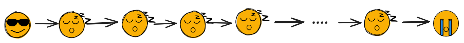
.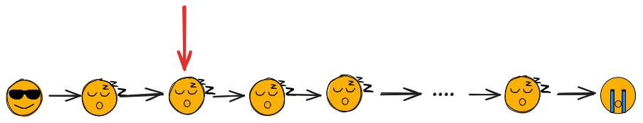
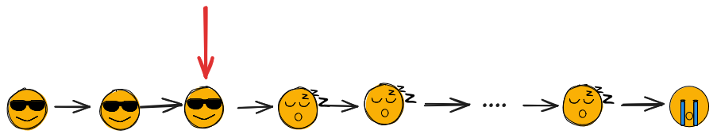
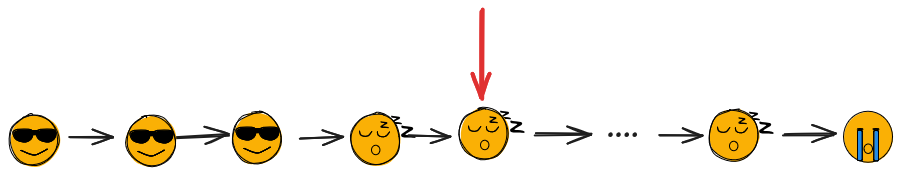
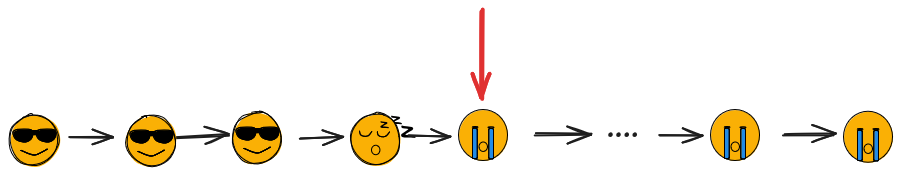
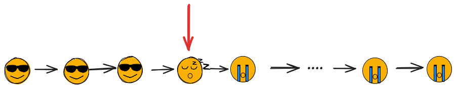
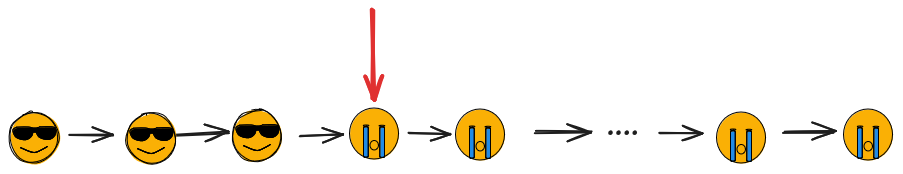
“Añadir un montón de archivos antes del almuerzo 🍝”
Muestra 145 ficheros modificados con 2.624 addiciones y 2.209 supresiones.
“refactor: empieza a usar YAML”
Visualización de 2 ficheros modificados con 3 addiciones y 2 supresiones.
15 minutos
““there’s no need for everyone to see the mistakes you made along the way””
traducción: “no hay necesidad de que todo el mundo vea los errores que cometiste en el camino”.
Mike McQuaid, Git in practice
5 minutos
Otra dimensión de tu trabajo.
Entradas en mi blog (inglés)
Trabajar en ramas
git commit --amend¿Qué es git commit --amend?
git commit --amendhttps://happygitwithr.com/repeated-amend
Primera parte del trabajo, git commit -m "feat: añade cosa buena"
Segunda parte del trabajo, git commit --amend --no-edit
…
Hecho! git push
git commit --amendgit checkout -b 'feature-cool'
Primera parte del trabajo, git commit -m "feat: añade cosa buena", git push
Segunda parte del trabajo, git commit --amend --no-edit, git push -f
…
Hecho! git push -f
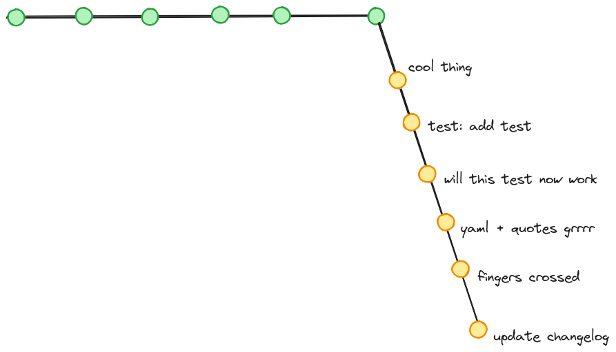
.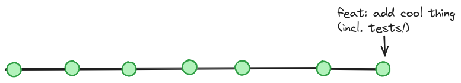
git reset --mixed Cambios en los archivos pero no en el historial de Git.
git add (--patch) Buenos commits, en retrospectiva.
git add --patch: práctica10 minutos
5 minutos
15 minutos
git rebase -i
git rebase -i
15 minutos
Recursos en inglés sobre git rebase
Mejor historial, en particular para
git blame
git bisect
git revert
✨ No tiene por qué hacerlo bien a la primera ✨
La repetida enmienda ™️
“Squash and merge” PR
Reempezar de cero de cero
Mezcla y combina tus commits
La terminal : no cambia, y aprendes las palabras.
RStudio IDE
Positron IDE, con la extensión GitLens
Otras IDE
GitHub Desktop
¡Practique con total seguridad con los parques de juegos de {saperlipopette} !
Julia Evans’ zines “Oh shit, Git!” and “How Git works”
Book Git in Practice by Mike McQuaid (reading notes)
Book Pro Git by Scott Chacon (reading notes)